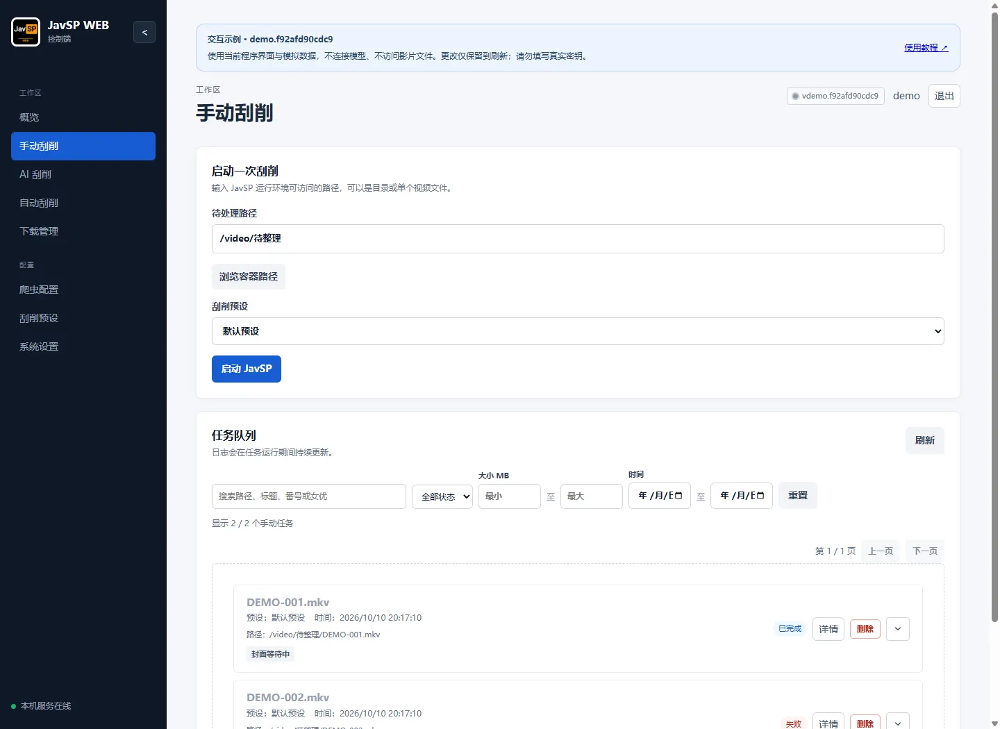
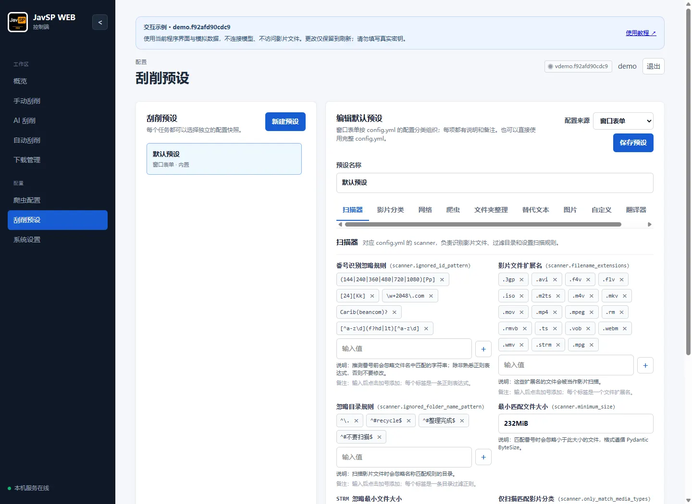

使用教程 / 02
刮削与整理
从单次任务到批量整理，了解预设、分类、分 P 与爬虫之间的关系。
手动刮削：提交、查看与处理结果
- 进入“手动刮削”，填写文件或目录路径；Docker 使用“浏览容器路径”，Windows 本机可使用文件选择器。
- 选定刮削预设，点击“启动 JavSP”。选择目录时，先等待扫描完成，找到的影片会陆续出现在任务队列中。
- 在任务队列查看状态、扫描数量和阶段进度。支持按状态、关键词、大小和时间筛选，并分页查看。
- 打开“详情”，先看最终结果，再展开数据源和图片日志。单个爬虫失败不代表整个任务失败；以最终是否取得必需资料并完成整理为准。

什么时候重试，什么时候处理文件？
- 只有图片失败：在任务详情中重试图片；封面还可从任务详情发起搜索、选择候选或上传，不必反复创建整部影片任务。
- 资料错误：在详情中编辑影片资料并保存；需要同步媒体库时按提示刷新。先核对番号与来源，避免把错误资料写回。
- 整理目标冲突：检查已有输出文件或剧照目录是否属于完整入库或未完成残留；不要把“删除任务记录”当作清理输出。
- 停止和删除：运行中的任务先停止再删除。删除记录不会自动撤销整理；可用的“还原”操作依赖该任务保存的整理记录与实际文件状态。
“概览”适合按封面浏览历史任务、查看详情和批量管理记录；“手动刮削”适合跟踪当前队列。任务日志摘要可复制，详细调试日志见排错章节。
挂载盘、STRM 与分 P 文件
CloudDrive2、WebDAV 等挂载目录仍按普通路径提交；先确保服务端能列出目录，Docker 内能通过挂载路径读到文件。目录枚举慢时查看扫描任务，避免连续点击启动创建重复扫描。
- 取消慢扫描：点击“停止扫描”停止后续任务创建；挂载盘响应慢时，停止操作也可能需要等待。已经加入队列的影片任务需分别停止。
- STRM：预设默认最小匹配大小为
232MiB。STRM 是很小的文本文件，可在“扫描器”勾选“STRM 忽略最小文件大小”，其他视频仍遵守大小限制。 - 分 P：同番号的
ABC-123-1.mp4、ABC-123-2.mp4可作为分段识别。分段编号必须明确且不重复；一个目录里的广告视频不能因为共同目录名而被当作分 P。 - 批量选择：本机文件选择器支持一次多选。多选后手动修改路径会取消原多选列表。Docker 当前浏览器选择目录或单文件，不上传本地影片。
广告混入时优先检查“影片分类”规则，并启用“仅扫描匹配影片分类”。先试扫少量文件，确认广告被排除、正常影片仍能识别。
刮削预设：识别规则、来源与整理方式
进入“刮削预设”，可新建、编辑和删除预设，选择窗口表单或完整 config.yml。修改并保存后，新任务会使用新设置；已经创建的任务仍使用原设置。
| 分组 | 重点检查 |
|---|---|
| 扫描器 | 扩展名、最小大小、STRM 开关、忽略目录、已有 NFO 的目录、多线程刮削数量。 |
| 影片分类 | 如何识别影片番号、先匹配哪个分类，以及匹配后使用哪些数据源。 |
| 网络 | 代理、站点镜像、请求超时与重试。用代理测试入口核对实际出口。 |
| 爬虫 | 各类影片使用的数据源、必须取得的资料，以及是否使用 AI 刮削。 |
| 文件夹整理 / 图片 | 输出目录模板、文件名、移动/硬链接、封面裁剪、剧照下载。 |
| 翻译器 | 翻译服务与字段。它与系统 AI 接入独立，配置一个不会自动配置另一个。 |
分类为什么会影响数据源？
高优先级规则先匹配。正则需包含 (?P<avid>...)，avid_format 决定生成的番号。分类 ID 与“爬虫”中的来源列表对应；例如自定义“无码”规则先匹配了 FC2，实际使用的是“无码”来源，而不是 FC2 来源。遇到此类问题先调整优先级或该分类的数据源。

“跳过已有 NFO 的目录”检查的是扫描输入目录，不保证输出目标没有冲突。“仅扫描匹配影片分类”适合过滤无关视频，但前提是规则能识别你要保留的影片。新规则先用少量文件验证。
输出模板和硬链接有文件系统要求，使用前核对输入与输出磁盘及权限。更多核心字段说明可查阅 JavSP Wiki。
爬虫与网络：先单独测试，再运行整批
- 进入“爬虫配置”，选择具体爬虫，输入一个确定存在的番号并运行测试。
- 查看抓取字段和运行输出：是否取得标题、封面，是否出现 403、超时或解析异常。
- 在“刮削预设 → 爬虫”调整该分类使用的数据源与顺序；爬虫配置页管理代码，预设页决定任务使用哪些爬虫。
- 自定义爬虫保存后再单独测试；仅保存代码不代表能抓到资料。内置爬虫只读，可移除和恢复。
代理地址由服务端使用。Docker 中 127.0.0.1 指向容器，宿主机代理需使用可达地址。HTTPS 证书失败时检查镜像域名、代理证书和系统信任，不要关闭证书校验。403 需同时检查出口与该站点的登录 Cookie；同步 Cookie 成功也不保证站点授权。
需要 AI 帮你制作爬虫时，在对话中说明目标站点和要提取的资料，检查生成的代码后再确认保存。保存后先测试一个番号，确认能取得资料，再用于批量刮削。